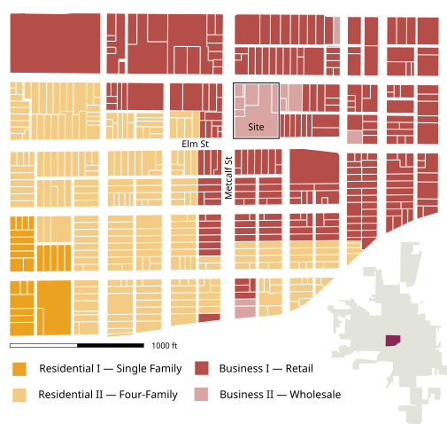
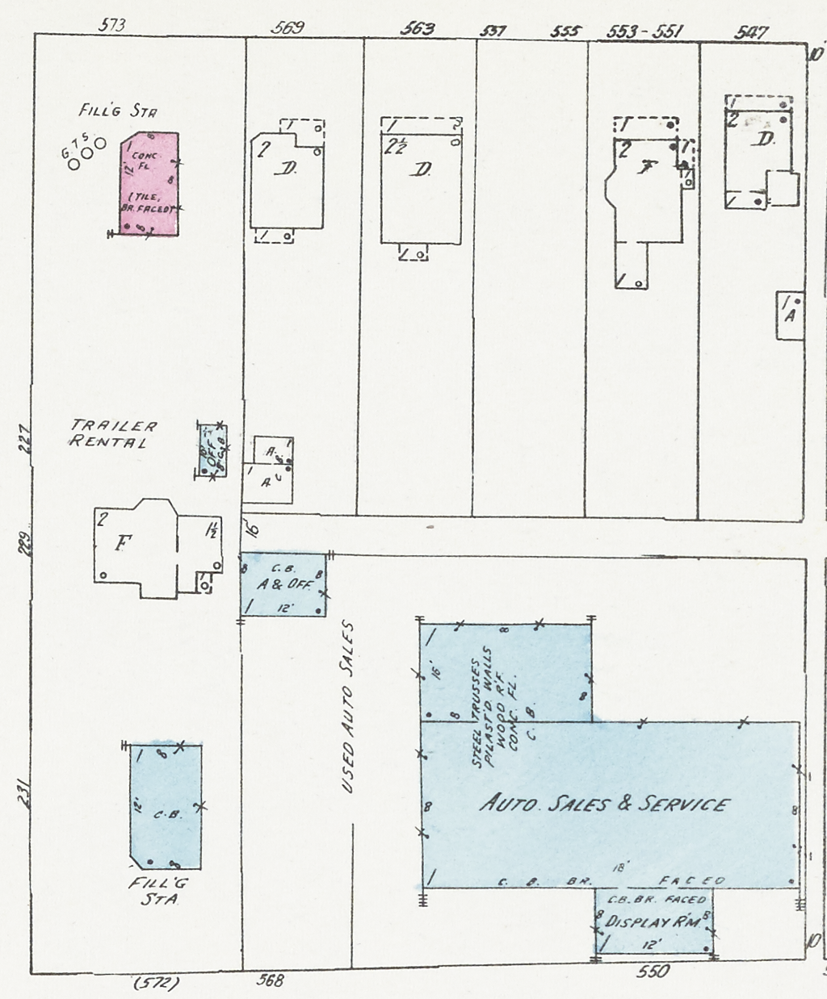

Lima, OH Site Redevelopment
Lima: Facing the Future
The City of Lima, Ohio faces challenges common to many Rustbelt cities: an aging population, loss of its industrial base, and the need for economic revitalization. This proposal examines one of many sites for potential redevelopment in Lima, situated directly southeast of downtown Lima at the intersection of Elm and Metcalf Streets, from which the site takes its name.
In this project for a graduate course on site planning, my team reimagined the Elm + Metcalf site in phases. Starting with removing vacant structures and introducing local programming, redevelopment moves to the construction of a new business venue and expanded green space. The final proposal better situates the site in its surrounding neighborhood.

Site & Land Use
Elm + Metcalf is located in a low-density neighborhood of mixed commercial and residential development. As Lima’s zoning is cumulative, housing intermingles considerably with local business – zoning does not perfectly reflect parcels’ land uses.
The site is roughly divided into four quadrants. A Habitat For Humanity ReStore and its two large parking lots occupy three quarters of the site. The last section – in the northwest corner – hosts the Lima Adult Learning Center and a vacant corner parcel with two dilapidated structures. This section lies atop a high retaining wall that internally divides the site.
Design Challenges
Topography presents the single greatest challenge to coherent site design. The retaining wall rises to more than eight feet high, severely limiting movement between except around the site’s periphery. Given the integration of uses called for in our proposal, our design includes a new stairway in the center of the site.
Parking issues can be abated by greater movement from the top and bottom of Elm + Metcalf. Two large parking lots take up significant space on-site, yet these are underused in off-peak business hours. Given the limited space for redevelopment in the northwest corner, our proposal includes a shared parking agreement between Elm + Metcalf’s three land owners.
Hydrology poses yet another challenge to site design. Evidence of ponding can be found across the site, with topography as the main culprit. Water flows inward from Metcalf into the southwest parking lot, and this is only partially captured by an internal storm drain. The northern parking lot and northwest corner also show evidence of ponding, which was reflected in the results of a hydric flow model run in the course of our analysis.
With redevelopment potential concentrated on the northwest corner, design choices revolve around how a new, vibrant use impacts the site, and how the coordinated uses can work better than disperate ones do presently.
Proposal
Our proposal responded to these challenges and was based on the following design aims:
Reactivate the Northwest Parcels
— Encourage development along a busy corridor
— Remove blighted structures; potential USTs
Expand Community & Green Space
— A new gathering space for Lima residents
— Beautify the area and reduce impervious surface
Improve Stormwater Management
— Identify sites of ponding and poor flow
— Incorporate green infrastructure where suitable
Plan Phased Development
— Realistic development timelines
— Exploring how to better coordinate land uses
Unify the Site & Area Identity
— Leverage site assets to improve the whole
— Reimagine Elm + Metcalf in the community
Coordinate Parking
— Reduce total parking on-site, especially NE lot
— Make more efficient use of existing parking




Please see Portfolio for further details.